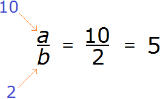
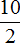
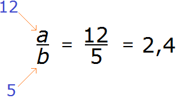
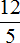
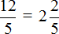
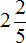

Множество — это набор каких-либо объектов. Объекты, из которых состоит множество, называются элементами этого множества.
Например: множество школьников, множество машин, множество чисел.
В математике множество рассматривается намного шире. Мы не будем сильно углубляться в эту тему, поскольку она относится к высшей математике и на первых порах может создавать трудности для обучения. Мы рассмотрим только ту часть темы, с которой уже имели дело.
Обозначения
Множество чаще всего обозначают заглавными буквами латинского алфавита, а его элементы — строчными. При этом элементы заключаются в фигурные скобки.
Например, если наших друзей зовут Том, Джон и Лео, то мы можем задать множество друзей, элементами которого будут Том, Джон и Лео.
Обозначим множество наших друзей через заглавную латинскую букву F (friends), затем поставим знак равенства и в фигурных скобках перечислим наших друзей:
F = { Том, Джон, Лео }
Пример 2. Запишем множество делителей числа 6.
Обозначим через любую заглавную латинскую букву данное множество, например, через букву D
D
затем поставим знак равенства и в фигурных скобках перечислим элементы данного множества, то есть перечислим делители числа 6
D = { 1, 2, 3, 6 }
Если какой-то элемент принадлежит заданному множеству, то эта принадлежность указывается с помощью знака принадлежности ∈. К примеру, делитель 2 принадлежит множеству делителей числа 6 (множеству D). Записывается это так:
2 ∈ D
Читается как «2 принадлежит множеству делителей числа 6»
Если какой-то элемент не принадлежит заданному множеству, то эта не принадлежность указывается с помощью зачёркнутого знака принадлежности ∉. К примеру, делитель 5 не принадлежит множеству D. Записывается это так:
5 ∉ D
Читается как «5 не принадлежит множеству делителей числа 6»
Кроме того, множество можно записывать прямым перечислением элементов, без заглавных букв. Это может быть удобным, если множество состоит из небольшого количества элементов. Например, зададим множество из одного элемента. Пусть этим элементом будет наш друг Том:
{ Том }
Зададим множество, которое состоит из одного числа 2
{ 2 }
Зададим множество, которое состоит из двух чисел: 2 и 5
{ 2, 5 }
Множество натуральных чисел
Это первое множество с которым мы начали работать. Натуральными числами называют числа 1, 2, 3 и т.д.
Натуральные числа появились из-за потребности людей сосчитать те или иные объекты. Например, посчитать количество кур, коров, лошадей. Натуральные числа возникают естественным образом при счёте.
В прошлых уроках, когда мы употребляли слово «число», чаще всего подразумевалось именно натуральное число.
В математике множество натуральных чисел обозначается заглавной латинской буквой N.
Например, укажем, что число 1 принадлежит множеству натуральных чисел. Для этого записываем число 1, затем с помощью знака принадлежности ∈ указываем, что единица принадлежит множеству N
1 ∈ N
Читается как: «единица принадлежит множеству натуральных чисел»
Множество целых чисел
Множество целых чисел включает в себя все положительные и отрицательные числа, а также число 0.
Множество целых чисел обозначается заглавной латинской буквой Z.
Укажем, к примеру, что число −5 принадлежит множеству целых чисел:
−5 ∈ Z
Укажем, что 10 принадлежит множеству целых чисел:
10 ∈ Z
Укажем, что 0 принадлежит множеству целых чисел:
0 ∈ Z
В будущем все положительные и отрицательные числа мы будем называть одним словосочетанием — целые числа.
Множество рациональных чисел
Рациональные числа, это те самые обыкновенные дроби, которые мы изучаем по сей день.
Рациональное число — это число, которое может быть представлено в виде дроби  , где a — числитель дроби, b — знаменатель.
, где a — числитель дроби, b — знаменатель.
В роли числителя и знаменателя могут быть любые числа, в том числе и целые (за исключением нуля, поскольку на нуль делить нельзя).
Например, представим, что вместо a стоит число 10, а вместо b — число 2

10 разделить на 2 равно 5. Видим, что число 5 может быть представлено в виде дроби

, а значит число 5 входит во множество рациональных чисел.Легко заметить, что число 5 также относится и ко множеству целых чисел. Стало быть множество целых чисел входит во множество рациональных чисел. А значит, во множество рациональных чисел входят не только обыкновенные дроби, но и целые числа вида −2, −1, 0, 1, 2.
Теперь представим, что вместо a стоит число 12, а вместо b — число 5.

12 разделить на 5 равно 2,4. Видим, что десятичная дробь 2,4 может быть представлена в виде дроби

, а значит она входит во множество рациональных чисел. Отсюда делаем вывод, что во множество рациональных чисел входят не только обыкновенные дроби и целые числа, но и десятичные дроби.Мы вычислили дробь и получили ответ 2,4. Но мы могли бы выделить в этой дроби целую часть:

При выделении целой части в дроби , получается смешанное число

. Видим, что смешанное число тоже может быть представлено в виде дроби . Значит во множество рациональных чисел входят и смешанные числа.В итоге мы приходим к выводу, что множество рациональных чисел содержат в себе:
- целые числа
- обыкновенные дроби
- десятичные дроби
- смешанные числа
Множество рациональных чисел обозначается заглавной латинской буквой Q.
Например укажем, что дробь  принадлежит множеству рациональных чисел. Для этого записываем саму дробь
принадлежит множеству рациональных чисел. Для этого записываем саму дробь  , затем с помощью знака принадлежности ∈ указываем, что дробь
, затем с помощью знака принадлежности ∈ указываем, что дробь  принадлежит множеству рациональных чисел:
принадлежит множеству рациональных чисел:
 ∈ Q
∈ Q
Укажем, что десятичная дробь 4,5 принадлежит множеству рациональных чисел:
4,5 ∈ Q
Укажем, что смешанное число  принадлежит множеству рациональных чисел:
принадлежит множеству рациональных чисел:
 ∈ Q
∈ Q
Вводный урок по множествам завершён. В будущем мы рассмотрим множества намного лучше, а пока рассмотренного в данном уроке будет достаточно.